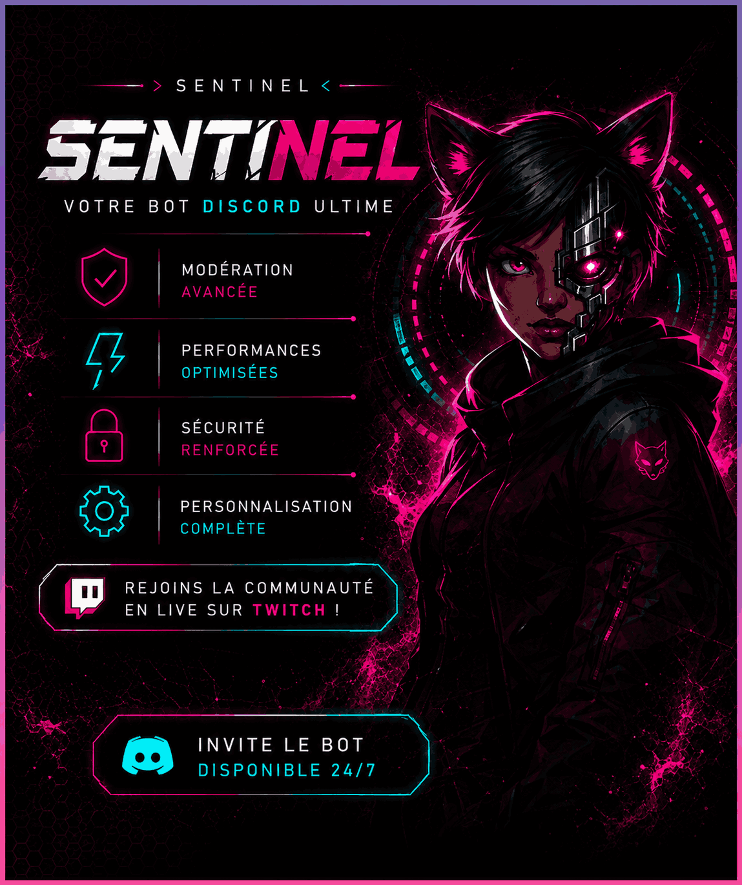

Service
Prise et fin de service par bouton, rôle automatique, durée de session et total individuel.
Performance · Sécurité · Fiabilité
Le bot Discord qui centralise les prises de service, les heures, les classements, les logs et la modération de ton serveur.


Gestion gratuite
Sentinel reste simple pour les membres, mais solide pour l’équipe qui configure et modère.
Prise et fin de service par bouton, rôle automatique, durée de session et total individuel.
Heures personnelles, historique limité gratuit, agents actifs et classement top 10.
Avertissements, timeout, fin de timeout, expulsion, bannissement, purge et sanctions.
Journalisation des services et actions de modération dans le salon choisi par ID.

Identité Sentinel
La page reprend le contraste noir, les éclats magenta, les lignes cyan et les panneaux techniques de la DA officielle.
Installation
Le bot guide les bases : langue du serveur, rôle de service, salon de logs et rôles autorisés.
Commandes
/mes-heuresVoir ses heures/historique-serviceVoir ses 5 dernières sessions/en-serviceVoir les agents actifs/top-serviceVoir le top 10/config-langueChoisir la langue/config-roleDéfinir le rôle de service/config-logsDéfinir le salon de logs/config-permissionsGérer les accès/avertirAjouter un avertissement/timeoutMuter temporairement/bannirBannir un utilisateur/sanctionsVoir les sanctionsSécurité
Accès de gestion par rôles configurés.
Vérification des permissions Discord natives.
Respect de la hiérarchie des rôles avant modération.
Données stockées serveur par serveur avec SQLite.
Ajoute le bot, choisis la langue de ton serveur et publie ton premier panneau de service.